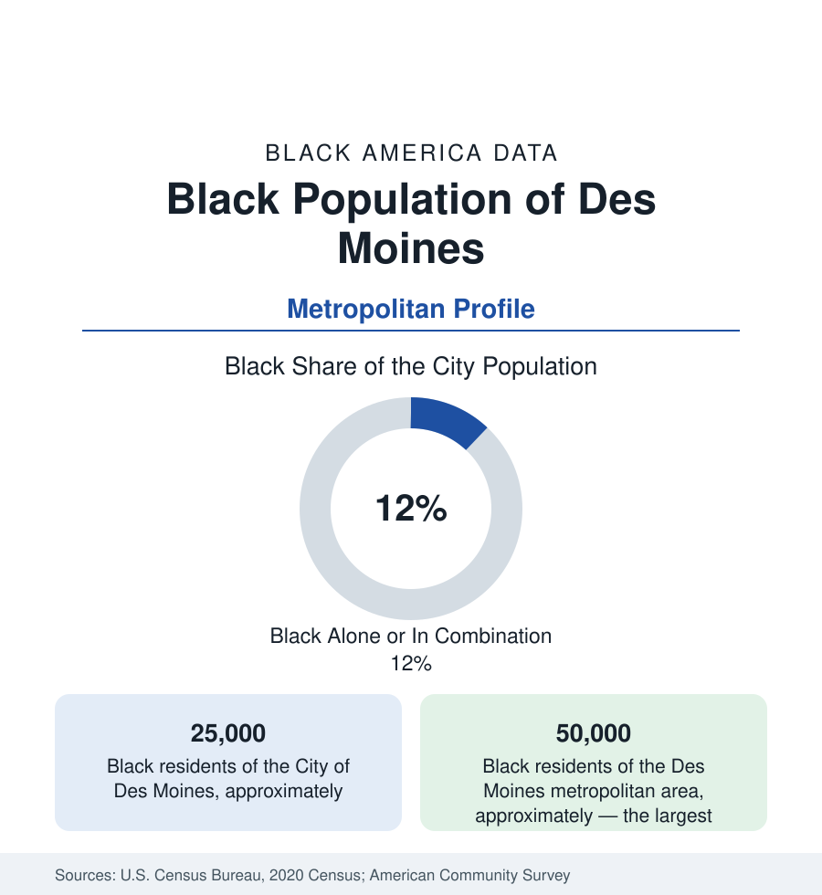

Black Cities
Black Des Moines: Center Street's Legacy and Iowa's Black Center
Des Moines holds about 25,000 Black residents in the city and 50,000 across the metro — small in count, central in Iowa's Black data. The census profile.

Des Moines holds about 25,000 Black residents within the city — Black alone or in combination, roughly an eighth of its 214,000 people — and about 50,000 across the metropolitan area, the largest Black community in Iowa and the center of the state's Black data. Small by this section's standards, the community's institutions and history are complete: a Center Street that was Iowa's Black main street, the state's Black political base, and a refugee-era diversity remaking the count.
Center Street and the Near North
Black Des Moines centered on Center Street — the district northwest of downtown whose clubs, businesses, and the Center Street jazz scene made it the state's Black cultural capital through the mid-twentieth century — cleared substantially for the freeway and civic projects of the renewal era in the familiar sequence. The population consolidated near-north and east: the districts around Evelyn Davis Park (named for the community's legendary activist — her park and the library branch beside it are the neighborhood's civic heart), the King Irving and Mondamin Presidential neighborhoods, the Martin Luther King Jr. Parkway corridor, and the east side's districts toward the fairgrounds. Drake University sits at the community's western edge (its neighborhood's data a town-gown file), and the suburban ring (Urbandale, West Des Moines, Ankeny, Johnston) records small, growing Black professional shares in the insurance suburbs.
Insurance Desks and State Desks
Des Moines is America's insurance capital — the industry's third-largest center in the U.S. data — and its Black workforce follows the finance profile at small-city scale: the claims, underwriting-operations, and IT floors of Principal, Wellmark, Nationwide's and Athene's operations, plus state government (the capital pattern), the hospital systems, and Drake and Des Moines University's eds layer. The indicators describe a community of modest means and high stability: Black Des Moines's poverty runs above the metro's low overall rate by the standard multiple, homeownership rooted in the near-north and east districts, and the income data lifted by the insurance economy's breadth. The meatpacking file reaches the metro's edge (the plants of the Iowa countryside draw on Des Moines's workforce sheds), and the logistics economy of the I-35/I-80 crossroads grows the warehouse tier.
The Resettlement Transformation
The modern data's loudest fact is compositional: Des Moines became, from the 1990s, one of America's notable refugee resettlement metros per capita — Sudanese (among the largest South Sudanese communities in the U.S.), Congolese, Burmese, Bosnian (an earlier wave), and Latino streams transforming the east and north sides — layered into the Black data through the African communities whose children fill the schools' newcomer programs. Des Moines Public Schools — the state's largest district — enrolls a majority of students of color speaking a hundred-plus languages; its Black enrollment now blends the Center Street generations' grandchildren with Khartoum's and Kinshasa's. Fort Des Moines — the park on the city's south side marks the site where the Army trained Black officers in the First World War (the 1917 class of the nation's first Black officer candidates) — anchors the historical layer beside the state museum's Black Iowa exhibits.
Change and the Estimates
The metro is Iowa's growth engine, and its Black population grows with it — the suburbs' shares rising from small bases, the near-north holding, the African communities expanding in the east-side corridors — while the state's rural Black populations (Waterloo, the state's second Black center, an hour northeast; the river towns of the state profile) send their graduates to the capital's desks. The caucus-era political file — Iowa's first-in-the-nation contest making Des Moines's Black precincts a quadrennial national dateline — is the community's recurring moment in the national data, its organization measured in the turnout of a dozen precincts.
Reading the Des Moines Numbers
The cultural record keeps its address at the park: Evelyn Davis's namesake green anchors a neighborhood whose summer calendar — the I'll Make Me a World in Iowa festival, the state's Black heritage celebration, headquartered in Des Moines — draws the statewide community home each year.
Des Moines is the small-center profile: 25,000 people who are, for an entire state, the Black center — its history, its politics, its institutions entire. The data's scale is modest and its completeness is not: everything this reference tracks exists here, at county fair size, with a refugee generation rewriting the composition tables in real time.
More in Black Cities
Black Atlanta: Population, Distribution, and Growth of a Black Metropolis
Metro Atlanta holds more than two million Black residents — roughly one in three, second only to New York. The suburban distribution, migration history, and composition of Black Atlanta in the census data.
Black New York: The Largest Black Population in America
The New York metropolitan area holds about 3.4 million Black residents — more than any metro in the nation — and the city itself about two million. The census profile.
Black Washington: The District and the Metro
The Washington metro holds about 1.6 million Black residents, and the District itself — long a majority-Black city — now records a Black share near 41 percent. The census profile.
Source: U.S. Census Bureau, 2020 Census; American Community Survey; Population Estimates Program.